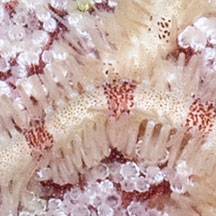
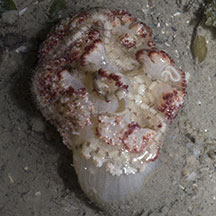
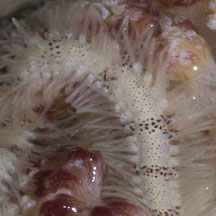
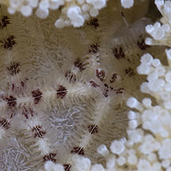
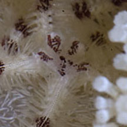
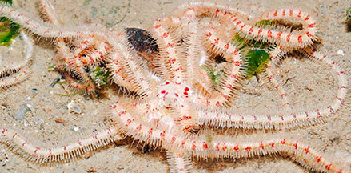
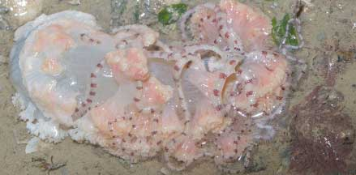
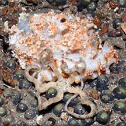

|
|
| brittle stars text index | photo index |
| Phylum Echinodermata > Class Stellaroida > Subclass Ophiuroidea |
| Ghost
brittle star awaiting identification* updated Apr 2020 Where seen?This large brittle star is well hidden inside Ball flowery soft corals and often overlooked. Its white arms with markings often closely match the colours of its host. Features: Central disk tiny, arms about 10-12cm long. Animal mostly white with coloured speckles, bands and markings that match its host. There may be several different kinds of brittle stars that live with these soft corals have this appearance. |
 Changi, Jun 16  |
 Changi, Jun 16  |
 Tuas, Dec 11  |
*Species are difficult to positively identify without close examination.
On this website, they are grouped by external features for convenience of display
| Ghost brittle stars on Singapore shores |
On wildsingapore
flickr
|
| Other sightings on Singapore shores |
 Changi, May 13 |
 Changi, May 21 Photo shared by Marcus Ng on facebook. |
 Beting Bronok, Aug 15 |
References
|